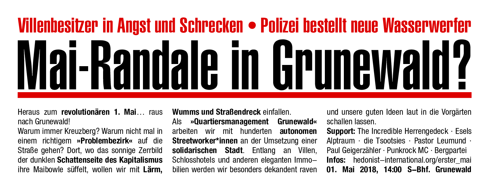
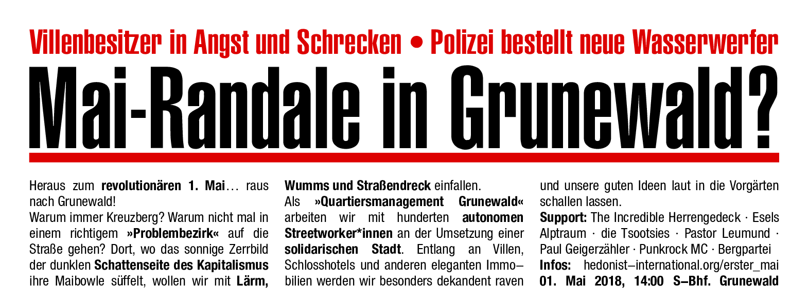

1. Mai - Polizei kriminalisiert Satire-Demonstration
Gilt Konfetti im Vorgarten jetzt schon als Landfriedensbruch?
Die Berliner Polizei will auf der bunten Satiredemo im Grunewald 72 Landfriedensbrüche festgestellt haben. Zuvor war noch von einer ähnlichen Anzahl von Sachbeschädigungen die Rede gewesen.
Mit etwa 5000 Menschen haben wir augenzwinkernd am 1. Mai 2018 erstmals im Edelbezirk Berlin-Grunewald gegen die zunehmende Kluft zwischen Arm und Reich, gegen Mietenwahnsinn, für Umverteilung sowie für eine höhere Erbschafts- und Vermögenssteuer protestiert. Sowohl Polizei als auch Veranstaltende und Presse waren vom großen Zulauf der Demo überrascht. Umso skandalöser ist, dass dieser neue und kreative Mai-Protest nun von der Polizei massiv kriminalisiert wird.
Aus zwei parlamentarischen Anfragen im Berliner Abgeordnetenhaus geht hervor: Während kurz nach der Demonstration noch von 82 Sachbeschädigungen, drei Landfriedensbrüchen und elf weiteren Delikten die Rede war, hat die Polizei nun 72 der Delikte zu Landfriedensbrüchen umdeklariert (siehe Anhang). Durch diese „Heraufstufung“ genehmigt sich die Polizei selbst tiefgreifendere Ermittlungsbefugnisse als sie bei Delikten wie Sachbeschädigung eigentlich hätte.
Landfriedensbruch bedeutet Folgendes: "Wenn aus einer Menschenmenge die öffentliche Sicherheit gefährdend oder an einer öffentlichen Zusammenrottung teilnehmende Gewalttätigkeiten gegen Menschen oder Sachen mit vereinten Kräften begangen werden."
In den Augen der Polizei muss der „gewaltbereite“ Satire-Mob entsprechend ganz schön auf die Kacke gehauen haben. Zum Vergleich: beim revolutionären 1. Mai in Kreuzberg wurden in den letzten fünf Jahren durchschnittlich 26,4 Fälle von Landfriedensbruch festgestellt.
Wer sich die Bilder aus Grunewald anschaut, kann sehen, wie grotesk und absurd dieser Vorwurf ist. Die kunterbunte Sozialarbeiter*innen Schaar, die Familien, ältere Menschen und sogar Anwohner*innen sollen dreimal gewaltsamer vorgegangen sein als der schwarze Block?
Peinlicher und durchschaubarer geht es kaum: Weil es am 1. Mai in Berlin nicht mehr richtig knallt, muss die Polizei jetzt schon Landfriedensbrüche auf Spaßprotesten und Satiredemos herbeiphantasieren und zusammenlügen, um im nächsten Jahr ihr martialisches Aufgebot und Einschränkungen der Versammlungsfreiheit rechtfertigen zu können.
Bis heute ist nicht klar, auf was sich die Ermittlungsverfahren überhaupt beziehen. Daher fordern wir die Polizei auf, die angeblichen Straftaten zu konkretisieren und offen zu legen, was eigentlich auf der Demonstration passiert sein soll. Der Verdacht liegt nahe, dass hier Bagatellen wie das Anbringen von Aufklebern, das Malen mit Kreide auf der Straße und das Werfen von Konfetti in Vorgärten zu Landfriedensbrüchen hochstilisiert werden sollen.
Wir sehen in diesem Vorgehen einen weiteren besorgniserregenden Angriff auf die Meinungs- und Versammlungsfreiheit nicht nur rückwirkend für diese Demonstration, sondern für alle zukünftigen Proteste.
Die Polizei macht hier mal wieder Politik um soziale Proteste zu diskreditieren und kriminalisieren. Die repressive Ausweitung des Landfriedensbruches ist spätestens seit dem G20-Gipfel in Hamburg zu beobachten. Diese Strategie ist nun auch in Berlin angekommen. Die Polizei sollte langsam mal auf den Boden der juristischen Tatsachen zurück kommen!
Die vollkommen unverhältnismäßige Reaktion der Polizei zeigt aber immerhin, dass der kapitalismuskritische und solidarische Protest im Grunewalder Villenviertel politisch genau ins Herz getroffen hat. Wir überlegen den Protest 2019 gleich als "Härteste revolutionäre Satiredemo der Welt" anzumelden.
Gez. Quartiersmanagement Grunewald
 
